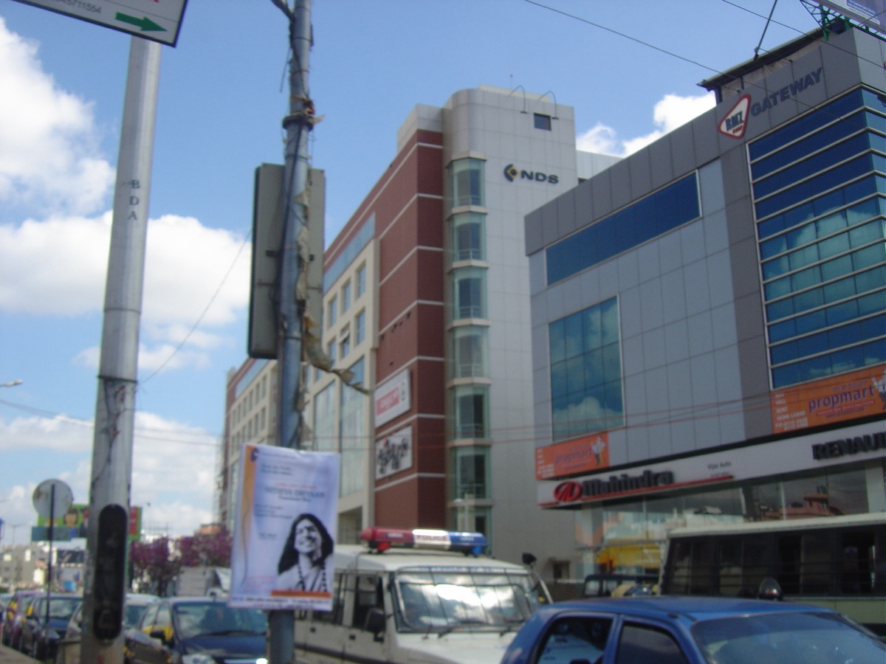
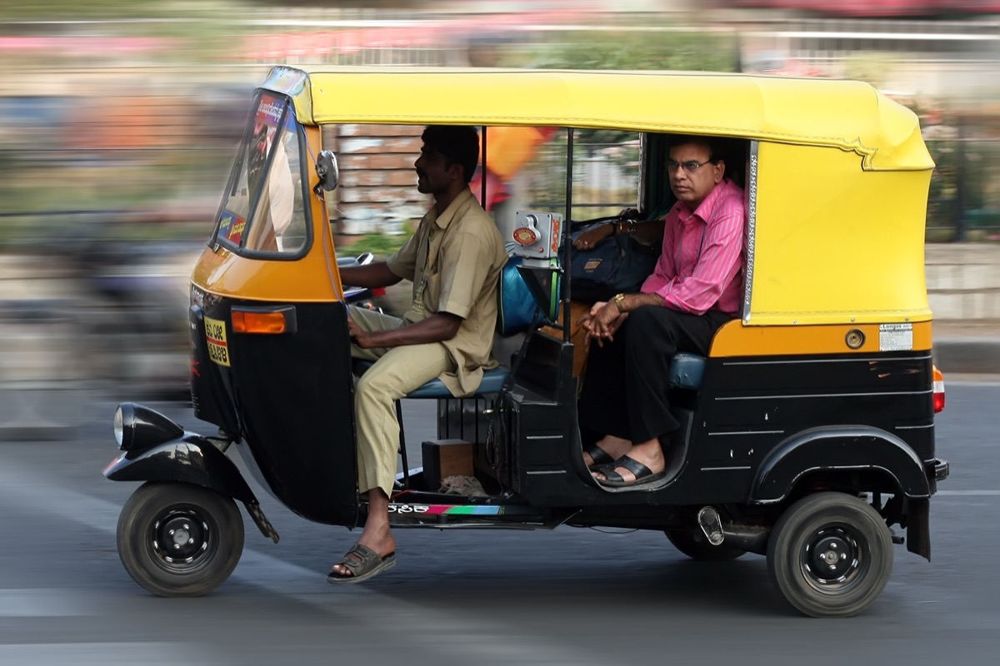
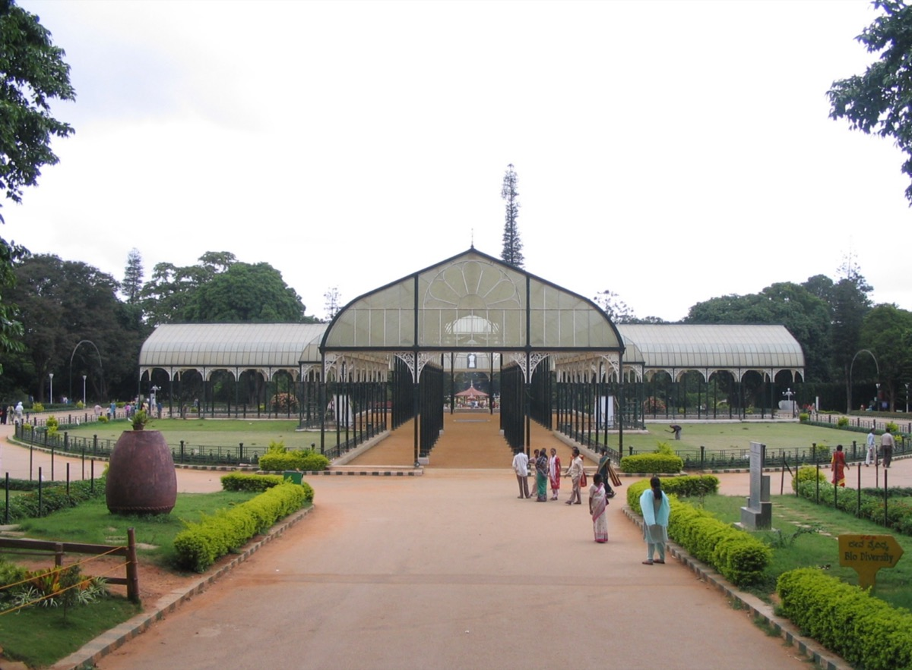
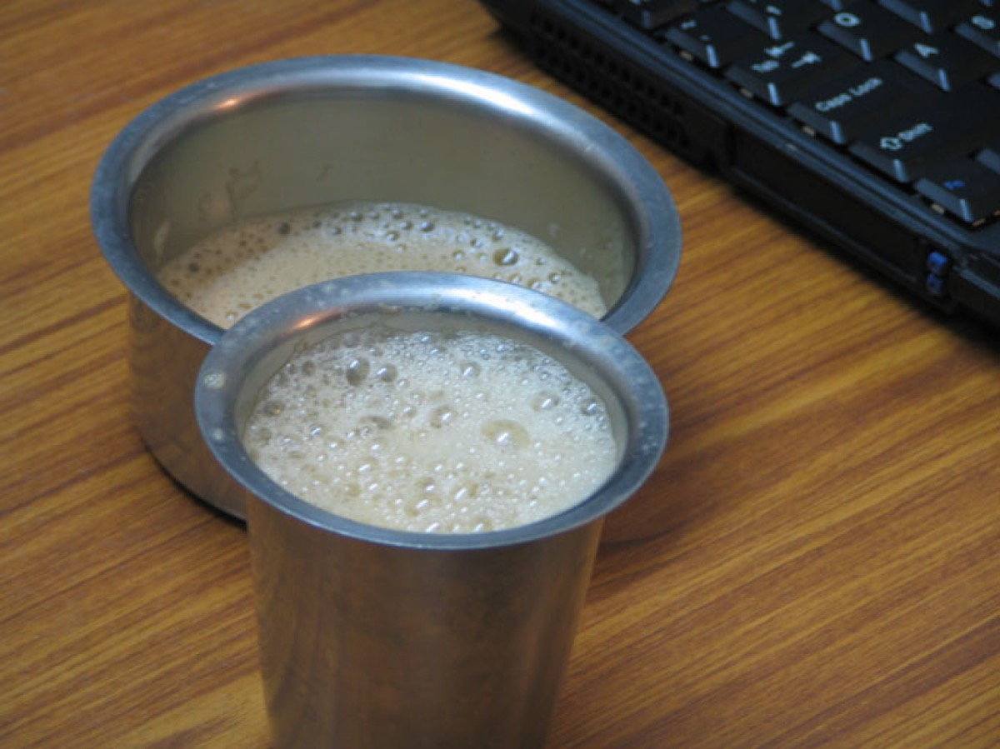
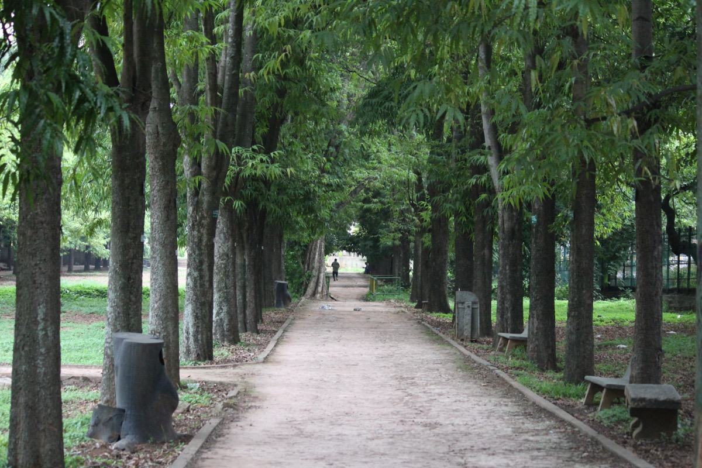

I used to think the right response to the world's suffering was guilt. Then I learned it was urgency. And then I moved 14,000 kilometers to act on it.
This is partly a farewell letter to Bangalore, or Bengaluru as the locals insist and I never quite committed to, and partly me trying to explain how a city shaped the way I think about technology, progress, and what we owe each other.
The city that teaches you contradictions
Bangalore doesn't let you hold simple opinions for very long.

I lived in Koramangala, the neighborhood where half the startups in India seem to get born. Walk down any main road in the 7th Block and you'd pass coworking spaces stacked three floors high, cafes where founders pitched VCs over flat whites, and the occasional Ola or Swiggy office just sitting there like its normal. Flipkart started just down the road. Razorpay's headquarters were nearby. There was a running joke that you couldn't throw a stone in Koramangala without hitting someone who's building an app.
But step off the main road and you'd see construction workers families living under tarps next to buildings worth crores. You'd see women carrying headloads of bricks past an Audi Q8 parked outside a brewery. The auto-rickshaw driver who refused your fare, the classic Bangalore "baralla" that infuriating one-word rejection in Kannada, was probably making less in a day than what you'd drop on a single meal at a rooftop bar in Indiranagar.

This is the thing about Bangalore. Its not poverty in the abstract. Its not a statistic you read in a GiveWell report. Its the woman selling jasmine garlands outside Lalbagh Botanical Garden at 6 AM while your finishing your morning walk past the 3-billion-year-old rock formation and the century-old glasshouse. Its the kid doing homework under a streetlight near VV Puram food street while your queuing up for a dosa. The inequality sits right in front of you, every single day, and you can't look away because Bangalore won't let you. The city is too dense, too intimate, too compressed for comfortable distance.

And I loved it. I loved it fiercely, in the specific way you love a place that won't let you be comfortable.
Filter coffee and moral philosophy
I was part of the Effective Altruism group in Bangalore. EA Bangalore, a small but earnest community of people trying to use evidence and reason to figure out how to do the most good. We'd meet at cafes, sometimes at coworking spaces. The conversations were intense in the way only conversations among young Indians who've read too much Peter Singer can be.
There's a particular quality to discussing utilitarian ethics in Bangalore that you don't get in Oxford or San Francisco. When someone in our group brought up the drowning child thought experiment, if you walked past a child drowning in a shallow pond would you ruin your expensive shoes to save them, the response wasn't theoretical. Half the group had relatives in villages where children actually died from preventable causes. The question wasn't hypothetical. It was biographical.

Many of us carried guilt. The specific guilt of being the ones who made it. Who got the engineering seat, who landed the tech job, who could afford the ₹200 filter coffee at Third Wave in Indiranagar instead of the ₹15 tumbler at a darshini near Lalbagh. The darshini, those no-frills stand-and-eat joints where you walk in, shout your order over the counter, get your idli-vada-filter-kaapi on a steel plate, eat standing up, and leave, thats the most democratic institution in Bangalore. CEOs and auto drivers eat the same food, standing at the same steel counters. But even in the darshini, you knew. You'd go back to your air-conditioned office, and the guy next to you might go back to a construction site.
That guilt was corrosive. It made people in our group optimize for feeling sacrificial rather than actually being effective.
Replacing guilt with urgency
Then someone shared Nate Soares' Replacing Guilt series and it reframed everything for me.
Soares' core argument is deceptively simple. Guilt is a terrible motivator for doing good. It leads to burnout, paralysis, and half-measures. People operating from guilt don't optimize. They self-flagellate. They pick careers that feel virtuous rather than careers that actually move the needle. I've seen this happen to so many smart people its honestly tragic.
What Soares advocates instead is something closer to clear-eyed caring. An honest assessment of what the world needs, paired with genuine desire to help, without the self-punishment. You don't help anyone by feeling bad. You help people by doing things that work.
This hit hard. I realized that a lot of our conversations in the Bangalore EA group were about moral purity. Whether it was ethical to work at a startup. Whether earning to give was just a convenient excuse for staying comfortable. Whether we were bad people for not dedicating every waking hour to direct poverty alleviation. These conversations generated enormous emotional heat but almost no useful light.
There's a famous saying in Kannada. ಕಾಯಕವೇ ಕೈಲಾಸ. "Kayakave Kailasa." It comes from Basavanna, the 12th century philosopher and social reformer from Karnataka. It translates roughly to "work itself is heaven" or "work is worship." Growing up in Karnataka you hear this everywhere… in school assemblies, on government building walls, from grandparents. But I think most people misunderstand what Basavanna actually meant. He wasn't glorifying drudgery. He was saying that dignified work, work with purpose, is what elevates human life. The question I kept coming back to was, what happens when we can give everyone access to that kind of purposeful existence instead of trapping billions of people in labor that breaks their bodies and wastes their minds?
The 80,000 Hours reframe
Around the same time I went deep into 80,000 Hours' research on high-impact careers. Their central insight is that your career is probably your biggest lever for impact. Roughly 80,000 hours of productive work over a lifetime. And most people allocate this resource terribly. Not because their selfish, but because they use the wrong heuristics. They optimize for feeling virtuous rather than for actual outcomes.
80,000 Hours pushed me to think in terms of scale. What problems, if solved, would help the most people? What skills and positions give you the most leverage? The answers were uncomfortable for someone steeped in the direct-action ethos of our Bangalore group. The highest-leverage work wasn't necessarily distributing bed nets or running sanitation programs in rural Karnataka, as valuable as those things are. It was working on technologies and systems that could lift entire economies.
This was a difficult shift. When you've walked through Bangalore's neighborhoods where families live in single rooms next to gleaming tech parks in Electronic City, the idea that you should go work on abstract technical problems instead of helping them directly feels almost obscene. But the numbers don't lie. The thing that has pulled more people out of poverty than any charity or government program in human history is economic growth, driven overwhelmingly by technological progress.
What Bangalore taught me that most EAs miss
Here's something that always struck me about the EA discourse in wealthier countries. There's a quiet paternalism in how they talk about economic development. They discuss "helping" people in developing countries as if those people are passive recipients of aid rather than active participants in their own economic lives.
In Bangalore I watched this narrative collide with reality every day. The city's tech boom didn't happen because Western donors decided to help India. It happened because Indians built things. Software, services, infrastructure. The IT outsourcing industry that Westerners sometimes mock as low-status work was, for millions of families, the bridge from subsistence to stability. Automation of back-office processes in Western companies created an entire industry in India that pulled a generation into the middle class.

Bangalore itself is proof of this. A city that was once known mainly for its pleasant weather, the "Garden City" perched 900 meters above sea level on the Deccan Plateau, blessed with year-round temperatures that rarely trouble you, transformed itself into India's Silicon Valley. Not through aid. Through technology, ambition, and the compounding effects of economic growth. Cubbon Park is still green and Lalbagh still has its flower shows but the city around them is unrecognizable from twenty years ago. That transformation happened because technology made things possible that just weren't possible before.
This gave me a very different intuition about automation than what I hear from most people in wealthy countries. When someone in San Francisco worries about automation eliminating jobs, their imagining a comfortable knowledge worker losing their position. When I think about automation I think about the multiplier effect. What happens when the cost of goods and services drops dramatically. When medical diagnostics become cheap enough for a clinic in rural Karnataka to actually use them. When educational tools become essentially free.
The moral case for accelerating automation isn't abstract to me. Every year we delay broadly capable AI systems, real people continue dying from diseases we could cure faster, living in poverty we could eliminate sooner, and spending their entire lives doing repetitive drudge work that machines could handle. Thats not a talking point for me. I've seen those people. I've eaten next to them at darshinis.
The guilt trap in AI ethics discourse
There's a version of the AI ethics conversation that mirrors the guilt dynamics Soares writes about. It goes something like this. "If you build AI that automates jobs, you're responsible for every person who loses their livelihood." This framing makes you feel like a bad person for wanting progress. Its the same emotional pattern as feeling guilty for eating a nice meal in Koramangala while someone nearby goes hungry.
But just as guilt about eating doesn't feed anyone, guilt about automation doesn't help displaced workers. What actually helps them is building systems that generate enough wealth to support robust safety nets, retraining programs, and ultimately a world where selling your labor is no longer a prerequisite for a decent life.
The child labor parallel is instructive here. In the 19th century, suggesting that children shouldn't work would have been seen as reckless because families depended on that income. It took the wealth generated by industrial automation to make child labor not just unnecessary but unthinkable. We may be approaching a similar inflection point for human labor more broadly… and I think that's something to work toward, not resist.
From Bangalore to San Jose
I'm writing this from San Jose now. I moved here because this is where the future is being built and I want to be close to where it happens.
I miss Bangalore constantly. I miss the weather, that perfect 22-degree equilibrium that Bangalore maintains like some kind of cosmic gift, the kind of climate San Jose thinks it has but doesn't quite. I miss the morning walks in Cubbon Park, the canopy of rain trees filtering the early light while joggers and dog-walkers traced familiar loops around you. I miss stepping into a darshini at 7 AM after a walk near Lalbagh, ordering a masala dosa and filter kaapi without even thinking about it, the server shouting the order in rapid Kannada, the whole transaction done in four minutes flat. I miss the particular sound of Bangalore mornings. Auto-rickshaws, temple bells, pressure cookers whistling from apartment windows, all layered on top of each other.
I miss the chaos of Church Street on a Saturday night. I miss Blossom Book House on Church Street, three floors of books stacked to the ceiling with that smell of old paper hitting you like a wall the moment you walk in. I miss the monsoon, the way Bangalore transforms when the rains come in June, every surface suddenly green, the lakes filling up, the whole city just exhaling after the dry heat of April and May.
I even miss the traffic… okay no. I'm lying. I don't miss the traffic. Nobody misses Bangalore traffic. Not even Bangalore misses Bangalore traffic.
But I didn't leave because I stopped loving the city. I left because Bangalore taught me something I couldn't unlearn. That technology is the most powerful force for human flourishing we've ever discovered, and that the moral thing to do is push it forward as fast as possible. ಕಾಯಕವೇ ಕೈಲಾಸ, but reimagined for a world where the "work" that matters most might be building the systems that free everyone else from work they never chose.
Where I've landed
My intellectual journey from the EA group in Bangalore to where I am now follows a clear through-line. Caring about reducing suffering at scale. Shedding the guilt that makes you optimize for feeling virtuous instead of being effective. And taking seriously the idea that economic growth driven by technology is the most powerful lever we have.
I still carry Bangalore with me. Not as guilt but as motivation. I had a classmate back in Bangalore who couldn't afford his own medicines. He would work night shifts at shopping malls just so he could buy them. Same classes as me during the day, stacking shelves at night so he could stay alive and keep studying. I think about him a lot. Not in a pity way but in a, this didn't have to be his life way. If healthcare was cheaper. If the economic floor was higher. If the systems around him weren't so broken that a college student had to choose between sleeping and not dying. I don't know where he is now… I hope he's okay. But every technical problem I work on, some part of me is still thinking about him. Does this bring forward the future where someone like him doesn't have to work nights at a mall just to afford basic medicine? Because thats the future I want to build. And I don't think we get there by slowing down.
San Jose is fine. The weather is good. The burritos are excellent. But there's no darshini here and the filter coffee is never quite right.
Bangalore, I'll be back. Hopefully by then we'll have built something worth bringing home.
← Back to all posts